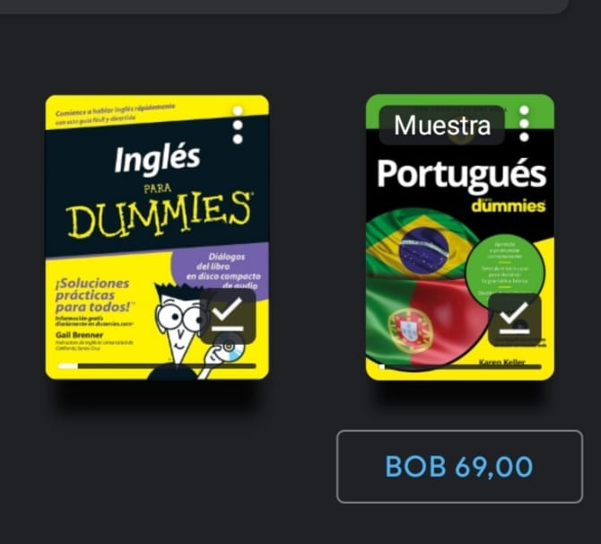

Sobre mis hobbis
jugar futbol con mis hermanos, mis primos o mis amigos. ahora ya es medio complicado porque todos estan muy apartados.
Viajar a lugares abiertos,con el tiempo se vuelve algo que te gusta
jugar videojuegos, en modo cooperativo es mas divertido o ayudando a mis hermanos o primos a pasar alguna zona. Es muy común que gracias a la pirateria que pude disfrutar varios juegos pero ahora busco una licencia windows original.
leer y buscar libros que sean buenos e interezantes, los libros son como las comidas donde algunos son muy buenos y otros no. Los libros en fisico son buenos pero los digitales se estan haciendo más faciles de leer donde son mas baratos y tiene modo oscuro que ayuda la vista
Encontrar blogs o páginas que tienen infomacion valiosa, algunas paginas en ingles me han ayudado en varios temas de aprendisaje y otras cuentan anécdotas muy buenas.
Aprender ingles, porque me di cuenta que te hace la vida mas comoda y no solo aprender por profesionalismo.

Ver películas, pero con el tiempo me aburrio porque cada con el internet ya no hay mucha emoción a la hora de ver una película, lo mismo con las series que me aburrieron a la mitad y los mangas me gustan porque se leen rápido.